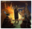

| 女仆之国 | |
|---|---|
| LOGO | |
| 别名/游戏中名称 | Maid Universalis |
| 类型 | 游戏模组 |
| 作者 | ChouGou |
| 版本 | 1.36.2 |
| 论坛/贴吧 | 一群：616827838（满） 二群：314908300 文件群：657581812 |
| STEAM创意工坊 | 2494666673 |
模组介绍
这个古怪的MOD包含以下内容：
- 独具匠心的女仆图像，包括事件图像、顾问头像及图标等女仆专属图像，均为作者本人手工绘制
- 特色鲜明的女仆阶层，可以给予玩家不同特权和修正，触发各类女仆专属事件和议程，甚至建立女仆政体国家
- 形形色色的女仆附庸，可以建立各种类型的女仆附庸国
- 以及涉及了游戏中伟大工程、宗教、理念、任务诸多方面的修改……
宗教
女仆之国模组仿照并融合了原版游戏的各个宗教，建立了一个包罗万象的宗教体系「女仆诸教」，它总共分为七种教派，每种教派的形式都大相径庭。
女仆学派
任何国家在转教为女仆诸教时，都将触发事件「什么是女仆」，这将决定国家未来的主要学派，并使国家获得该学派的永久增益。
所有女仆宗教都可以通过决议事件邀请其他宗教学派讲座（消耗50行政点数），每次邀请学派后获得的修正持续20年，可为国家带来不同的额外增益。
|
传统保守派 |
传统中立派 |
传统自由派 |
|
中立保守派 |
绝对中立派 |
中立自由派 |
|
拓展保守派 |
拓展中立派 |
拓展自由派 |
女仆诸教
女仆诸教之间互为异端，与女仆诸教以外的所有宗教组互为异教。
| 教派 | 国家效果 | 省份效果 | 机制 | 备注 |
|---|---|---|---|---|
| 主人崇拜 |
|
|
|
|
| 女仆清教派 |
|
|
|
|
| 妹抖教廷 |
|
|
|
|
| 侍道派 |
|
|
|
|
| 妹抖东仪教会 |
|
|
|
|
| 使女派 |
|
|
|
|
| 女仆僧侣派 |
|
|
|
|
外交互动
决议
名胜列表（WIP）
女仆之国中，所有女仆奇观在任意剧本中都处于未建造的状态，需要通过执行决议进行修建。
 建造一座奇观
建造一座奇观
潜在需求
|
接受
|
效果
| |
AI决议权重：
- 基础权重：0
下表是女仆之国中所有名胜及其生效条件、不同等级的信息。
| 名字 | 初始等级 | 要求 | 引人注目 | 远近闻名 | 雄伟壮丽 |
|---|---|---|---|---|---|
| Maid Harem 女仆宫 |
0 |
下列条件满足其一：
省份拥有者：
|
全局修正：
升级到此等级时： 以下机制将持续生效：
|
全局修正：
升级到此等级时： 以下机制将持续生效：
|
全局修正：
升级到此等级时： 以下机制将持续生效：
|
| Maid Temple 女仆庙 |
0 |
下列条件满足其一：
省份拥有者：
|
全局修正：
升级到此等级时：
|
全局修正：
升级到此等级时：
|
全局修正：
升级到此等级时：
以下机制将持续生效：
|
| Maid Port 女仆港 |
0 |
下列条件满足其一：
省份：
省份拥有者：
|
省份修正：
全局修正：
升级到此等级时：
以下机制将持续生效：
|
全局修正： |
全局修正： |
{kind=link}
女仆国重命名决议
- 重命名决议的目标国家必须是女仆领附庸类型的女仆国
- 每个重命名决议都需要花费100
 杜卡特
杜卡特 - 每个重命名决议都将为执行者提供50
 威望
威望 - 所有重命名决议都将为目标国家提供永久国家修正「女仆重组的国家」，效果如下：
- -0.50年度威望
 -10%独立倾向
-10%独立倾向
| 国家 | 新的名字 | 说明 |
|---|---|---|
| 茵梦保护国 |
| |
| 右岸特许酒区 |
| |
| 信义护廷 |
| |
| 三贤坟冢 |
| |
| 希伊斯圣堂 |
| |
| 罗马浴堂山 |
| |
| 黑砂 |
| |
| 胡斯姊妹圣堂 |
| |
| 多瑙明珠领 |
| |
| 圣女骑士团 | ||
| 英格兰女仆领 |
| |
| 不列颠女仆领 |
| |
| 突厥女仆领 |
| |
| 东帝国女仆领 |
| |
| 司晨领 |
| |
| 群山女仆领 |
| |
| 普鲁士女仆辖区 |
| |
| 日月司晨领 | ||
| 低地女仆领 | ||
| 雪原女仆领 | ||
| 平原女仆领 | ||
| 雨林女仆领 | ||
| 黑羊女仆领 | ||
| 白羊女仆领 | ||
| 坩埚女仆汗国 | ||
| 米兰女仆领 | ||
| 女仆城塞 | ||
| 帖木儿女仆领 | ||
| 先锋女仆领 |
|
阶层
女仆阶层
阶层修正
 影响力 – 女仆阶层的基础影响力为 0%，受到以下因素修正：
影响力 – 女仆阶层的基础影响力为 0%，受到以下因素修正：
- +30% 行政、外交和军事权中，授予女仆任一特权（按照君主能力比例增减）
- +20% 处于女仆掌权灾难
- +10% 拥有女仆配偶或统治者特质「女仆的孩子」
- +10% 完成了八卦理念「零散情报」
- +10% 实行改革「增强女仆特权」、「女仆议庭」、「女仆宫廷」、「女仆议会」或「女仆氏族议会」
- +5% 姐姐模式下，任意女仆科技达到十级（根据等级比例增减）
- +5% 普通模式下，任意女仆科技达到五级（根据等级比例增减）
- +5% 拥有任一类型的女仆长属地
- +5% 实行改革「女仆君主制」
- +5% 家政服务贸易
- +5% 是神圣妹抖帝国
- −10% 是中华文化组（非
 大明）
大明） - −10% 女仆发明机器人
- −10% 拥有50点及以上的主人权威
- −10% 启用了行政政策「强制随军」
- −10% 完成了压榨理念「义务劳动」
- −20% 实行改革「限制女仆特权」
- −20% 5级受女仆（按照等级比例增减）
科技列表
女仆科技分为简单模式与普通模式
| 等級 | 行政科技 | 外交科技 | 军事科技 |
|---|---|---|---|
| 1 | |||
| 2 | |||
| 3 | |||
| 4 | |||
| 5 |
| 等級 | 行政科技 | 外交科技 | 军事科技 |
|---|---|---|---|
| 1 | |||
| 2 | |||
| 3 | |||
| 4 | |||
| 5 | |||
| 6 | |||
| 7 | |||
| 8 | |||
| 9 | |||
| 10 |
属国类型
说明：
- 需求：建立关系所需要满足的条件。
- 贡品：附属国每月向宗主国支付的类型。
- 外交槽：附属国是否占用宗主的外交关系数量。
- 参战：附属国是否自动加入宗主的战争，如果它忠诚。
- 整合：宗主是否可以外交吞并附属国。
- 中止关系：附属国是否可以通过外交行动（即不用战争）主动取消附属关系。
- 外交限制：附属国的外交行动是否受到限制。
- 效果：给予附属国和宗主国的修正，如果有的话。如果宗主国有多个相同（或不同）类型的附属国，修正将叠加。
| 属国类型 | 要求 | 贡品 | 整合 | 中止关系 | 外交限制 | 宗主国&属国获得效果 | ||
|---|---|---|---|---|---|---|---|---|
|
|
宗主国：
协从国：
| ||||||
| 集权协从国 |
|
|
宗主国：
集权协从国：
| |||||
| 次级女仆国 |
|
|
宗主国：
次级女仆国：
| |||||
| 女仆国 |
|
|
宗主国：
女仆国：
| |||||
| 特权女仆国 |
|
|
宗主国：
特权女仆国：
| |||||
| 集权女仆国 |
|
|
宗主国：
集权女仆国：
| |||||
| 女仆领 |
|
|
宗主国：
女仆领：
| |||||
| 女仆辖区 |
|
宗主国：
女仆辖区：
| ||||||
| 女仆长属地 |
|
|
宗主国：
女仆长属地：
| |||||
| 卫戍女仆长属地 |
|
|
宗主国：
卫戍女仆长属地：
| |||||
| 女仆殖民地 |
|
|
宗主国：
女仆殖民地：
| |||||
| 扬裙女仆领 |
|
|
宗主国：
扬裙女仆领：
| |||||
| 新世界女仆长属地 |
|
|
宗主国：
新世界女仆长属地：
| |||||
| 萝莉女仆领 |
|
|
宗主国：
萝莉女仆领：
|
协从国
- 女仆协从国不占用外交上限，会上交贡品以及增加天命
- 但是可以自由开战，且不会随宗主国作战
- 建立女仆协从国将花费25
 外交点数
外交点数
女仆国
A feudatory is a state that has obligated itself to follow the lead of a larger and more influential country in the same culture group. Historically these are countries that would often have been part of some sort of league with their overlord’s other subjects, in many ways this is a privileged subject type, if one with large obligations.
Feudatories provide  manpower to their overlord and are expected to take part in their wars. As the only subject type that can be called to war but does not cost a
manpower to their overlord and are expected to take part in their wars. As the only subject type that can be called to war but does not cost a  diplomatic relations slot, feudatories are one of the strongest subject types and building a large network of feudatories can substantially increase a nation's strength, but this is limited as feudatories can normally only be made of countries in the same culture group. Historical examples are the Template:Country data Rome Roman Socii, the Punic cities of North Africa under Template:Country data Carthage, or the city leagues in Aegean under the Template:Country data Antigonid Kingdom Antigonids.
diplomatic relations slot, feudatories are one of the strongest subject types and building a large network of feudatories can substantially increase a nation's strength, but this is limited as feudatories can normally only be made of countries in the same culture group. Historical examples are the Template:Country data Rome Roman Socii, the Punic cities of North Africa under Template:Country data Carthage, or the city leagues in Aegean under the Template:Country data Antigonid Kingdom Antigonids.
If a country has the （未识别的字符串“invention”用于 {{Icon}}） Proportional Agreements （未识别的字符串“ora”用于 {{Icon}}） Oratory invention, small countries (with less than （未识别的字符串“territories”用于 {{Icon}}） 12 territories) that are （未识别的字符串“guarantee”用于 {{Icon}}） guaranteed may occasionally request feudatory status, which can be an important method of diplomatic expansion.
集权女仆国
A tribal vassal is a tribal kingdom, chiefdom or federation that has a close relationship to a nearby stronger civilized state. For the tribal state, this means a significantly easier route towards civilizing, as it will increase both the countrywide level of （未识别的字符串“civilization”用于Template:Icon） civilization and the growth of it in all their territories. The tribal state in turn pays with its  manpower to the overlord who, will also promise to protect them. Historical subjects of this type would be the Numidian kingdoms subject to Template:Country data Carthage and various Template:Country data Rome Roman clients on the later imperial border. When a vassal tribe adopts a civilized form of government, it will become a tributary.
manpower to the overlord who, will also promise to protect them. Historical subjects of this type would be the Numidian kingdoms subject to Template:Country data Carthage and various Template:Country data Rome Roman clients on the later imperial border. When a vassal tribe adopts a civilized form of government, it will become a tributary.
Client state
Client states are in some ways more tightly integrated with their overlord, but unlike the feudatories they are not necessarily of the same culture group and they do not enjoy a privileged status in the same way, paying a large part of their （未识别的字符串“wealth”用于 {{Icon}}） income instead of providing  manpower. A client king is separated from a governor mostly by his level of autonomy and having local ties to the ruled country. Client states can be created by subjugating existing countries like most other subject types, converted from loyal tributaries through an occasional event, or released from the country's currently owned provinces in the File:Menu overview.png Nation Overview.
manpower. A client king is separated from a governor mostly by his level of autonomy and having local ties to the ruled country. Client states can be created by subjugating existing countries like most other subject types, converted from loyal tributaries through an occasional event, or released from the country's currently owned provinces in the File:Menu overview.png Nation Overview.
{kind=link}
Satrapy
Satrapies are a special type of subject that is only available if the junior party has access to the （未识别的字符串“military tradition”用于 {{Icon}}） Persian traditions military tradition tree. The fundamental unit of organization in Persia since the time of the Template:Country data Media Median and Template:Country data Achaemenid Empire Achaemenid empires, a satrap is in some ways similar to a governor but is expected to have greater authority, bigger obligations, and a more imposing realm somewhat comparable to a client state. As having powerful satraps is an expectation in the east a few of them will also help with maintaining the  legitimacy for their overlord kingdoms. Satrapies are notoriously independent minded and troublesome, however, and events will periodically require interactions to keep satraps happy.
legitimacy for their overlord kingdoms. Satrapies are notoriously independent minded and troublesome, however, and events will periodically require interactions to keep satraps happy.
Since the conquest of the Achaemenid Empire almost all the old Persian satrapies are now ruled by Macedonians, with satrapies at the start date including Template:Country data Bactria, Template:Country data Parthia, and Template:Country data Arachosia under the Template:Country data Seleukid Empire and Template:Country data Cappadocia under the Template:Country data Antigonid Kingdom; Template:Country data Sardis and Template:Country data Phrygia (Satrapy) Phrygia can also be released as satrapies of Template:Country data Thrace if the Template:Country data Antigonid Kingdom collapses. The Template:Country data Hellenistic Empire can also establish a number of its own unique satrapies through the associated Hellenistic Empire mission tree.
Colony
Colonies typically represent subjects descended from the mother nation and have a loose, largely mercantile relationship with their overlord. Like tributaries, they neither provide manpower nor can be called into wars, but importantly each colony also provides a boost to the （未识别的字符串“commerce value”用于Template:Icon） commerce income of the overlord that usually far outstrips their direct tribute, and so can be highly advantageous to establish. Colonies can mostly only be created through certain tasks in the Template:Country data Carthage Carthaginian mission trees, though it is also possible for  雅典 to become a colony of the Template:Country data Antigonid Kingdom if it finishes the loyalist path of its unique Athens in Chains national mission tree.
雅典 to become a colony of the Template:Country data Antigonid Kingdom if it finishes the loyalist path of its unique Athens in Chains national mission tree.
Mercenary state
（未识别的字符串“mgr”用于 {{Icon}}） |
只适用于DLC[[(unrecognized string "mgr"Template:Expansion)]]激活时。 |
A mercenary state is a particular type of client state that has been created by granting control of a city to a mercenary company, much like the historical Template:Country data Mamertine Republic. As well as fighting alongside their overlord, each mercenary state will also  reduce the overlord's costs when hiring other mercenary companies, and if the overlord is a monarchy with the （未识别的字符串“law”用于
reduce the overlord's costs when hiring other mercenary companies, and if the overlord is a monarchy with the （未识别的字符串“law”用于 {{Icon}}） Mercenary Contract Law enacted, the overlord can use the Elect New Leader Character Interaction to replace their current leader with that of the mercenary state at the cost of some  stability, much like Agathokles himself once did.
stability, much like Agathokles himself once did.
Mercenary states can generally only be created by releasing an owned （未识别的字符串“city”用于Template:Icon） city through the File:Create mercenary state.png Create Mercenary State territory action at the cost of （未识别的字符串“pol”用于 Template:Icon) 50 political power, available from the start of the game to Template:Country data Syracusae (representing the rich mercenary-using traditions of the Siceliotes) or to any country that has adopted the （未识别的字符串“invention”用于 {{Icon}}） Satellite Status （未识别的字符串“ora”用于 {{Icon}}） Oratory invention. The Template:Country data Mamertine Republic, when released, will also be a mercenary state.
{kind=link}
League city
（未识别的字符串“hoa”用于 {{Icon}}） |
只适用于DLC[[(unrecognized string "hoa"Template:Expansion)]]激活时。 |
A league city is a city that has been granted substantial autonomy and, like colonies, have a loose, largely mercantile relationship with their overlord. League cities are generally focused on trade and production, with powerful bonuses to （未识别的字符串“capital trade routes”用于Template:Icon） capital import routes and especially （未识别的字符串“surplus threshold”用于 {{Icon}}） slaves needed for surplus trade good production. This can make them useful as a trade partner to import excess goods from the mother country, as well as producing surpluses of valuable trade goods that can then be exported to the overlord.
League cities can only be created by releasing an owned （未识别的字符串“city”用于Template:Icon） city through the File:Create mercenary state.png Create League City territory action at the cost of （未识别的字符串“pol”用于 Template:Icon) 50 political power, available to any country that has adopted the （未识别的字符串“invention”用于 {{Icon}}） Coloniae （未识别的字符串“civ”用于Template:Icon） Civic invention.
Acquiring subjects
There are many ways to acquire new subjects over the course of the game:
- Waging war and defeating a country will allow for File:Become subject.png forcing vassalization of existing states in a peace deal. A country can be vassalized if its
 capital is occupied in a war, with a smaller （未识别的字符串“warscore cost”用于
capital is occupied in a war, with a smaller （未识别的字符串“warscore cost”用于 {{Icon}}） warscore cost and halved （未识别的字符串“aggressive expansion”用于 Template:Icon） aggressive expansion compared to directly annexing the country. Defeated countries can be forced into any subject type that they and their future overlord fulfill the potential for, with all subject types being equivalent in terms of warscore cost and aggressive expansion gain. Like all other peace deal demands, forcing vassalization is not possible if the warscore cost exceeds 100, e.g. if the realm is currently too large. Both independent nations and countries that are already subjects of another country can be subjugated this way. - A more diplomatically inclined nation can offer vassalization through various diplomatic influence actions. This requires that the potential conditions are met and that the target country have at least
 100 opinion of the potential overlord, but is generally unlikely to be accepted unless the target is much weaker than, and has a very high opinion of the potential overlord. Targets are more likely to accept becoming certain subject types (such as tribal vassal or tributary status) over others (including feudatory and client status).
100 opinion of the potential overlord, but is generally unlikely to be accepted unless the target is much weaker than, and has a very high opinion of the potential overlord. Targets are more likely to accept becoming certain subject types (such as tribal vassal or tributary status) over others (including feudatory and client status). - Countries can use the Demand Subject Transfer diplomatic action to peacefully take existing subject states of other nations if they are disloyal, and the target has at least 80 opinion of their potential new overlord. As with offering vassalization, military strength and the target's opinion of their potential new overlord are important.
- The File:Release subject.png Release Subject action in the Administration tab of the File:Menu overview.png Nation overview screen allows a country to release a new client state out of any non-capital province, if there are
 diplomatic relation slots available. This country will be dynamically created and take on the name, culture, and religion of its capital territory.
diplomatic relation slots available. This country will be dynamically created and take on the name, culture, and religion of its capital territory.
- The File:Create mercenary state.png Create Mercenary State territory action in the Tactical tab, available to Template:Country data Syracusae and countries that have adopted the （未识别的字符串“invention”用于
{{Icon}}） Satellite Status （未识别的字符串“ora”用于{{Icon}}） Oratory invention, instead allows releasing a mercenary state out of any non-capital city, if there are diplomatic relation slots available. This is the only way in general to create new mercenary state subjects, and requires the （未识别的字符串“mgr”用于 {{Icon}}） Magna Graecia DLC. - The File:Create mercenary state.png Create League City territory action in the Tactical tab, available to countries that have adopted the （未识别的字符串“invention”用于
{{Icon}}） Coloniae （未识别的字符串“civ”用于Template:Icon） Civic invention, instead allows releasing a league city out of any non-capital city. This is the only way to create new league city subjects, and requires the Heirs of Alexander DLC.
- The File:Create mercenary state.png Create Mercenary State territory action in the Tactical tab, available to Template:Country data Syracusae and countries that have adopted the （未识别的字符串“invention”用于
- If a pretender that the country has supported using the （未识别的字符串“character interaction”用于Template:Icon） Support Pretender interaction wins a （未识别的字符串“civil war”用于Template:Icon） civil war, they can be forced to become a client king if their country is a lower rank than their sponsor.
- If the （未识别的字符串“invention”用于
{{Icon}}） Proportional Agreements （未识别的字符串“ora”用于{{Icon}}） Oratory invention has been adopted, countries in a larger power's Sphere of Influence - those that are （未识别的字符串“guarantee”用于{{Icon}}） guaranteed and own less than （未识别的字符串“territories”用于{{Icon}}） 12 territories - will occasionally offer to become a feudatory of their protector. - Many events and especially missions also offer opportunities to get new subjects, both from releasing new countries out of currently owned territory (such as the many colonies and feudatories available in the Template:Country data Carthage Carthaginian mission trees) or from vassalizing existing countries (such as in the Italic League mission/event chain of the Template:Country data Rome Roman mission tree). This is the only way to create new colonies.
{kind=link}
{kind=link}
理念相关
女仆之国政策
 行政点数
行政点数
 外交点数
外交点数
 军事点数
军事点数
外交
|
间谍
|
探索
|
影响
|
航海
|
贸易
|
八卦
| ||||||||||
行政
|
+1 −15% |
−0.1% +20% |
+10 +5% |
−20% |
+1 |
+20% |
+1 +1 +1 +1 +1 −1 |
−0.1 +20% |
+20% +5% |
+10% +15% |
−10% −10% |
−20% −5% |
+50% |
+10% +10% |
+15% +15% |
−5% +15% |
经济
|
+15% −0.05 |
+50% +1 |
+25% |
+25% +100% |
+25% +5% |
+10% +10% |
+10% −10% |
−1 −10% |
-5% -5 |
+33% +1 |
+5% -15% |
+10% +10% |
+10% |
+10% +0.2 |
+5% |
+10% −10% |
扩张
|
+10% +1 |
−0.05 +20% |
+20 −50% |
+25% +10% |
+33% |
+10% +20% |
−15% |
−10% +5% |
+1% -15% |
+0.5 +10% |
-15% |
−20% −20% |
+5% |
+10% +10% |
+1 |
+10% +10 |
人文
|
+1 +20% |
+25% −1 |
+10 +50% |
+1 +1 |
+10% −33% |
−10% +20% |
+10% +20% |
−25% −0.05 |
+2 +2 |
−2 +0.5 |
+25% +10% |
+5% +5% |
−1 −5 |
+1 +10% |
+0.5 −1% |
+1 |
革新
|
−10% +1 |
−25% +1 |
+5% +10% |
−10% −10% |
+1 +10% |
−0.25 +10% |
+20% |
+10% −10% |
+5% −20% |
-5% -5% |
−5% +20% |
+5% +1 |
+10% +1 |
+0.5 −10% |
+10% |
−20% +10% |
宗教
|
+20% +1% |
+1% +20% |
+10% −10% |
−20% |
+10% +5% |
+10% +1% |
−1 +1% |
−1 +1 |
+5% +5% |
-5 +1% |
+1 +1 |
−10% +1 |
+20% +3% |
+2 −50% |
+5% +10% |
+10% +5% |
贵族
|
+1 +1 |
+10% |
+33% |
−1 +100% |
−1% |
+30% +1 | ||||||||||
防御
|
+1 +1 |
+10% −0.1 |
+20% +10% |
−0.03 +10% |
−10% +15% |
+25% +1 | ||||||||||
神权
|
+1 +15% +1 +0.5 +0.5 +0.5 +0.1 +1 |
+20% |
+15% +5% |
−10% +1% |
+50% +50% |
+15% +15% | ||||||||||
游牧
|
+10% +10% |
+50% +10% |
+5% −50% |
+5% +100% |
+10% +1 |
-20% +10% | ||||||||||
|  原住民
|
+1 +15% |
+10% −10% |
+2.5% +10% |
+1 −15% |
+25% |
+15% +25% | ||||||||||
海军
|
+33% |
+1 +10% |
+20% |
+33% +1 |
+50% +50% |
+40% −10% | ||||||||||
进攻
|
+50% +1 |
+10% +1 |
+50% +5% |
−20% +1 |
+1 +5% |
+10% +10% | ||||||||||
财阀
|
−10% +1 +1 +1 +1 +25% |
+33% |
+20% +10 |
+100% −10% |
−15% +15% |
+1 −10% | ||||||||||
质量
|
+1 −0.05 |
−0.5% |
+10% −25% |
+25% +10% |
+20% |
+20% | ||||||||||
数量
|
+1 +10% |
+25% −15% |
+10% +1 |
+1 +10% |
−15% +15% |
+20% |
女仆之国理念
| 女仆八卦网理念 |
此信息可能已落后版本，最后更新于1.33 ----
|
+25%间谍网建设
|
|
相关事件：女仆八卦网理念组事件 |
| 女仆理念 |
此信息可能已落后版本，最后更新于1.33 ----
|
| +1君主军事能力
|
|
相关事件：女仆念组事件 |
| 神圣妹抖帝国的理念 |
| +1 年度正统性 +1 年度奉献度
|
+1 外交关系
|
|
+100% 产生新继承人的几率
+25% 移动速度 |